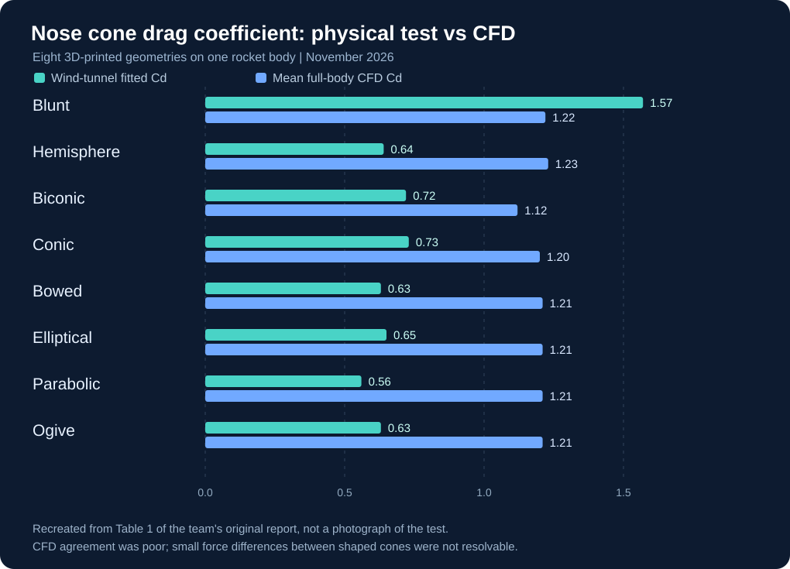

01 / 04Fluid mechanics / November 2026 / four-person team
Rocket Nose Cone Aerodynamics
Designed all eight rocket nose geometries, completed SolidWorks CFD studies, acquired wind-tunnel measurements from 20-120 mph, analyzed data in Excel, and authored the team report. Documented significant disagreement between simulation and experiment.